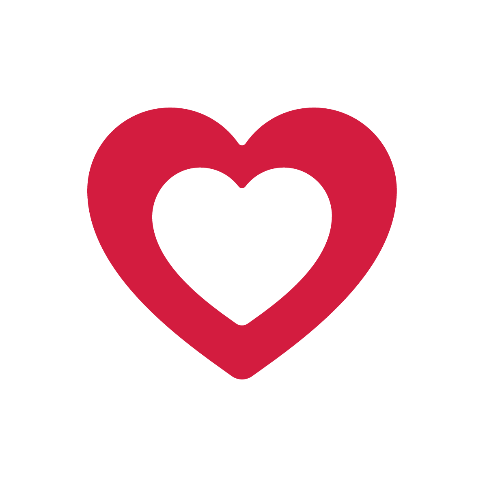
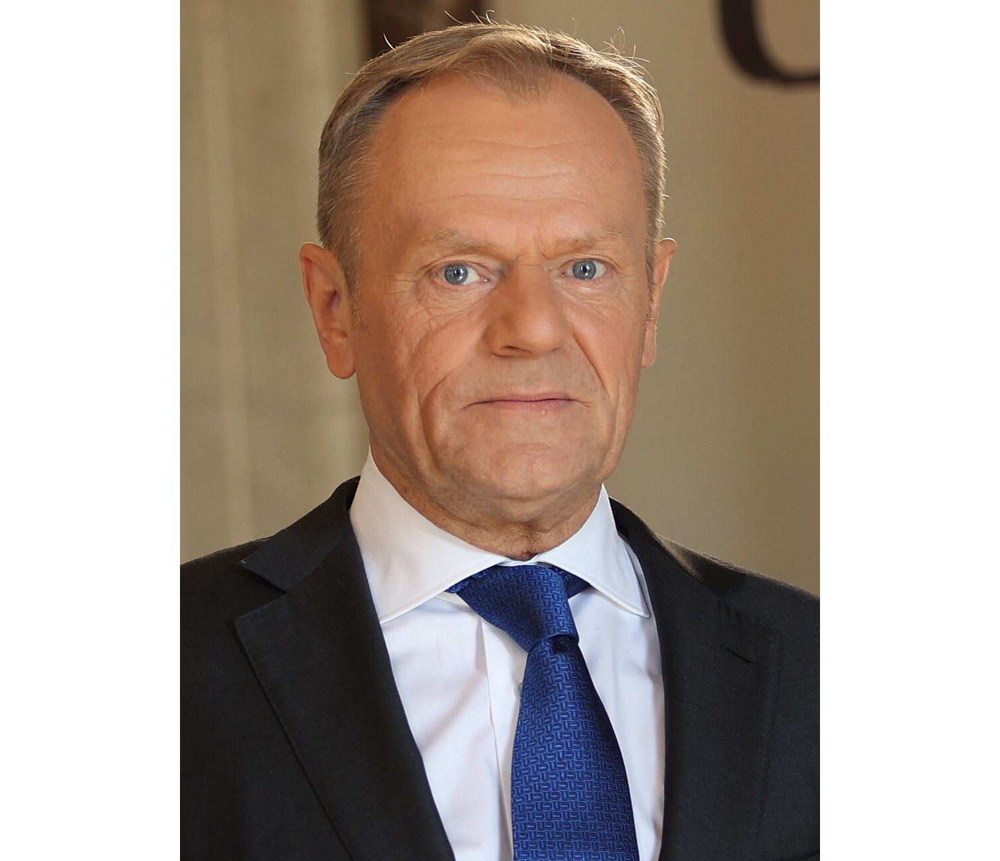
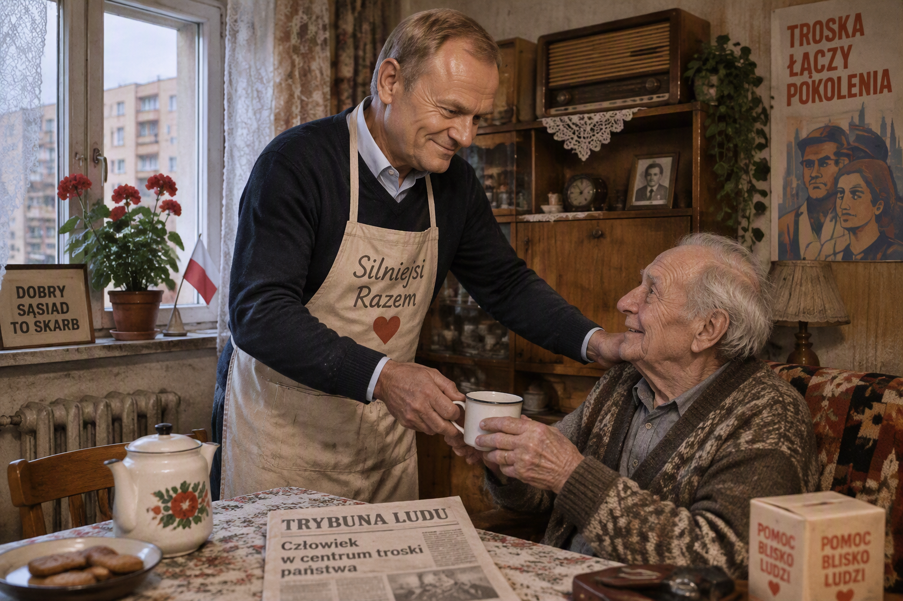
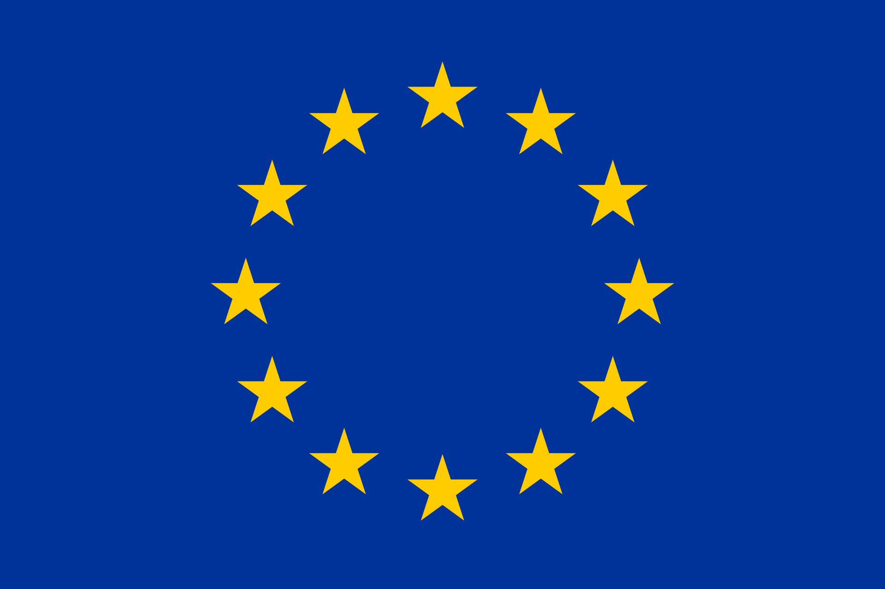
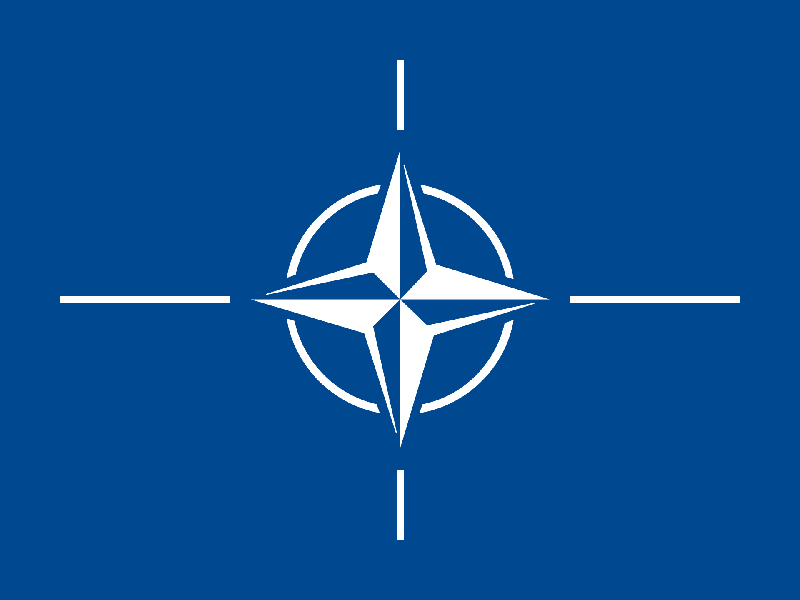

Czym
jest Koalicja Obywatelska
Platforma Obywatelska (PO) to partia polityczna plasująca się w politycznym centrum, łącząca elementy socjalliberalizmu, liberalnego konserwatyzmu, chrześcijańskiej demokracji oraz silnego proeuropeizmu. Choć ugrupowanie powstało w 2001 roku jako formacja wyraźnie liberalno-gospodarcza i konserwatywna światopoglądowo, na przestrzeni lat przesunęło swoje akcenty w stronę postulatów centrowo-lewicowych i socjalnych. Platforma Obywatelska (PO) to polska partia polityczna o charakterze centrowym, która w październiku 2025 roku formalnie przekształciła się w partię Koalicja Obywatelska.

Najważniejsze o
PO
Platforma Obywatelska powstała 24 stycznia 2001 roku jako stowarzyszenie polityczne. Jej celem było stworzenie ugrupowania, które połączy zwolenników wolnego rynku, demokracji i integracji europejskiej. 5 marca 2002 roku została oficjalnie zarejestrowana jako partia polityczna, co umożliwiło jej formalne działanie w polskim systemie partyjnym.
Przewodniczący
Najważniejszą postacią Platformy Obywatelskiej jest Donald Tusk, który odgrywa kluczową rolę w jej rozwoju. Był jednym z założycieli partii, a następnie jej wieloletnim przewodniczącym. Pełnił funkcję premiera Polski w latach 2007–2014, a w grudniu 2023 roku ponownie objął urząd premiera. Jego działalność miała duży wpływ na pozycję PO w polskiej polityce.

Profil polityczny
Platforma Obywatelska przez wiele lat była określana jako partia centroprawicowa, o profilu liberalno-konserwatywnym. Opowiadała się za gospodarką rynkową, przedsiębiorczością i integracją Polski z Unią Europejską. Z czasem jej program ewoluował w stronę centrum i socjalliberalizmu. Ugrupowanie podkreśla znaczenie praw obywatelskich, demokracji, praworządności oraz współpracy z państwami europejskimi. PO jest obecnie główną partią współtworzącą Koalicję Obywatelską.
Edukacja i ochrona zdrowia
Edukacja
• Wyższe wynagrodzenia nauczycieli – poprawa warunków pracy nauczycieli i zachęcanie nowych osób do pracy w szkołach.
• *Nowoczesne nauczanie* – zmniejszenie zakresu materiału, rozwijanie umiejętności praktycznych oraz lepsze przygotowanie uczniów do przyszłej pracy.
• *Mniej prac domowych* – ograniczenie obowiązkowych prac domowych w szkołach podstawowych i przeznaczenie większej ilości czasu na odpoczynek oraz zainteresowania.
• *Wsparcie psychologiczne* – zapewnienie uczniom łatwiejszego dostępu do psychologów i pomocy w problemach szkolnych oraz osobistych.
*Ochrona zdrowia*
• *Krótsze kolejki do lekarzy* – poprawa dostępności wizyt u specjalistów i zwiększenie dostępności leczenia finansowanego przez NFZ.
• *Lepsza opieka psychiczna* – rozwój pomocy psychologicznej i psychiatrycznej finansowanej przez państwo.
• *Profilaktyka zdrowotna* – większy nacisk na badania, które pozwalają wcześniej wykrywać choroby.
• *Finansowanie in vitro* – wsparcie par, które mają trudności z posiadaniem dzieci.
Pomoc rodzinom, seniorom i młodym ludziom
Wsparcie rodzin
• Rozwój żłobków – zwiększenie liczby miejsc dla małych dzieci, aby rodzice mogli łatwiej wrócić do pracy.
• Łączenie pracy z wychowaniem dzieci – ułatwianie rodzicom powrotu na rynek pracy po urlopie związanym z narodzinami dziecka.
• Wsparcie osób z niepełnosprawnościami – rozwijanie pomocy dla osób potrzebujących opieki oraz ich rodzin.
Pomoc seniorom
• Godne życie na emeryturze – działania mające poprawić bezpieczeństwo finansowe osób starszych.
• Aktywność seniorów – wspieranie uczestnictwa osób starszych w życiu społecznym.
• Pomoc osobom niesamodzielnym – rozwijanie systemu opieki i wsparcia dla seniorów, którzy potrzebują pomocy w codziennym życiu.
Mieszkania i młodzi ludzie
• Większa dostępność mieszkań – wspieranie budowy mieszkań na wynajem oraz mieszkań komunalnych i socjalnych.
• Łatwiejszy start w dorosłość – poprawa możliwości usamodzielnienia się młodych ludzi i znalezienia odpowiedniego mieszkania.
• Wsparcie samorządów – zachęcanie samorządów do zwiększania liczby dostępnych mieszkań na swoim terenie.

Propozycje Koalicji Obywatelskiej
• Wyłączenie najcenniejszych przyrodniczo obszarów lasów z wycinki.
• Objęcie rzek stałym monitoringiem czystości wody
• Odtwarzanie torfowisk i mokradeł, które pomagają chronić przyrodę
• Zakończenie nielegalnego importu śmieci do Polski
• Ograniczenie wycinki drzew w miastach i zwiększenie liczby terenów zielonych
• Rozwój energetyki wiatrowej na lądzie i energii słonecznej
• Ułatwienie budowy elektrowni wiatrowych, między innymi przez propozycję zmniejszenia wymaganej odległości od zabudowań do 500 metrów
• Umożliwienie tworzenia 700 lokalnych wspólnot energetycznych, które mogłyby produkować własny prąd
• Rozwój odnawialnych źródeł energii oraz energetyki jądrowej
• Zapowiedź ograniczenia emisji CO₂ w energetyce o 75% do 2030 roku.
Najczęściej wskazywane problemy
• Niezrealizowane obietnice: część zapowiedzi wyborczych dotyczących energetyki i ochrony przyrody nadal nie została w pełni zrealizowana
• Wysokie koszty zmian: rozwój OZE, modernizacja sieci energetycznych i transformacja energetyczna wymagają dużych nakładów finansowych
• Brak wystarczająco konkretnych planów: krytycy wskazują, że niektórym propozycjom brakuje szczegółowego harmonogramu realizacji
• Spór o ochronę przyrody: pojawiają się zarzuty dotyczące zbyt wolnego wprowadzania zmian w ochronie lasów i rzek
W październiku 2025 roku Greenpeace krytykował rząd Donalda Tuska za niewystarczające postępy w realizacji części obietnic dotyczących energetyki i ochrony przyrody.
Polityka zagraniczna
• Współpraca z Unią Europejską - wzmacnianie pozycji Polski w UE i korzystanie ze wspólnych inicjatyw.
Rząd poprawił dialog z instytucjami UE, Polska zaczęła otrzymywać środki z Krajowego Planu Odbudowy (KPO), po wcześniejszym sporze dotyczącym praworządności, w pierwszej połowie 2025 r. Polska sprawowała prezydencję w Radzie UE.
• Dobre relacje z sojusznikami - rozwijanie współpracy z państwami europejskimi i Stanami Zjednoczonymi.
Rząd wznowił intensywniejszy dialog z Niemcami i Francją, wzmocniono współpracę w ramach Trójkąta Weimarskiego, czyli formatu Polska-Niemcy-Francja, Polska podkreśla znaczenie współpracy z Europą i USA jednocześnie.
• Wsparcie dla Ukrainy - pomoc Ukrainie w związku z rosyjską agresją.
Polska kontynuuje pomoc Ukrainie zaatakowanej przez Rosję, wspiera działania dyplomatyczne na rzecz niepodległości i bezpieczeństwa Ukrainy, Polska pełni ważną rolę w organizowaniu pomocy wojskowej i humanitarnej.
• Aktywna dyplomacja - dbanie o interesy Polski na arenie międzynarodowej.

Bezpieczeństwo Polski
• Silna armia - modernizacja wojska i zakup nowoczesnego sprzętu.
Rząd kontynuuje modernizację techniczną wojska i rozwój nowych jednostek.
• NATO - wzmacnianie współpracy z sojusznikami w celu ochrony Polski.
Rząd rozwija współpracę wojskową z państwami europejskimi i USA.
• Ochrona granic - zwiększanie bezpieczeństwa granic państwa.
W 2024 r. rozpoczęto program „Tarcza Wschód”, który ma wzmacniać wschodnią granicę Polski.
• Obrona cywilna - przygotowanie służb i obywateli na sytuacje kryzysowe.
W grudniu 2024 r. uchwalono ustawę o ochronie ludności i obronie cywilnej, przewiduje ona m.in. rozwój systemu ostrzegania, przygotowanie do ewakuacji oraz lepszą ochronę ludności podczas kryzysów.
• Inwestycje w obronność - rozwój polskiego przemysłu zbrojeniowego i infrastruktury obronnej.
